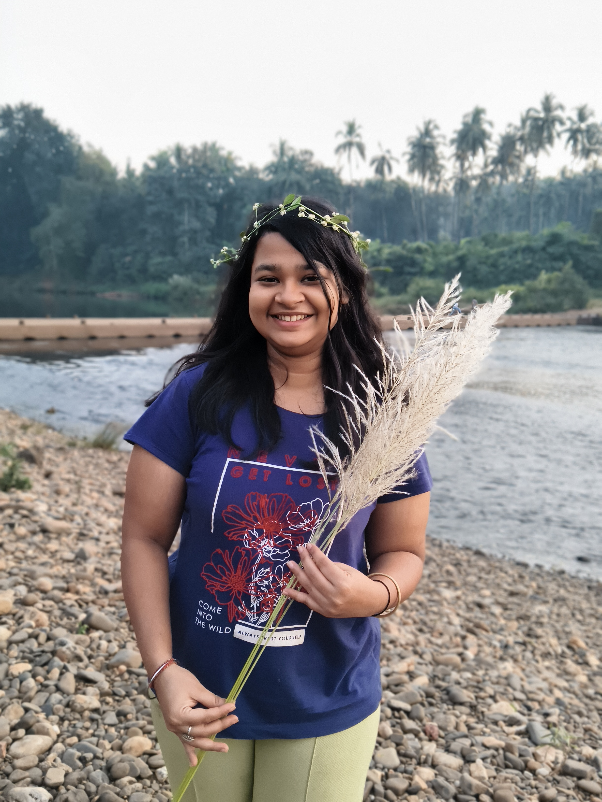
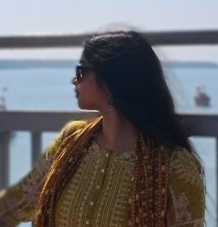
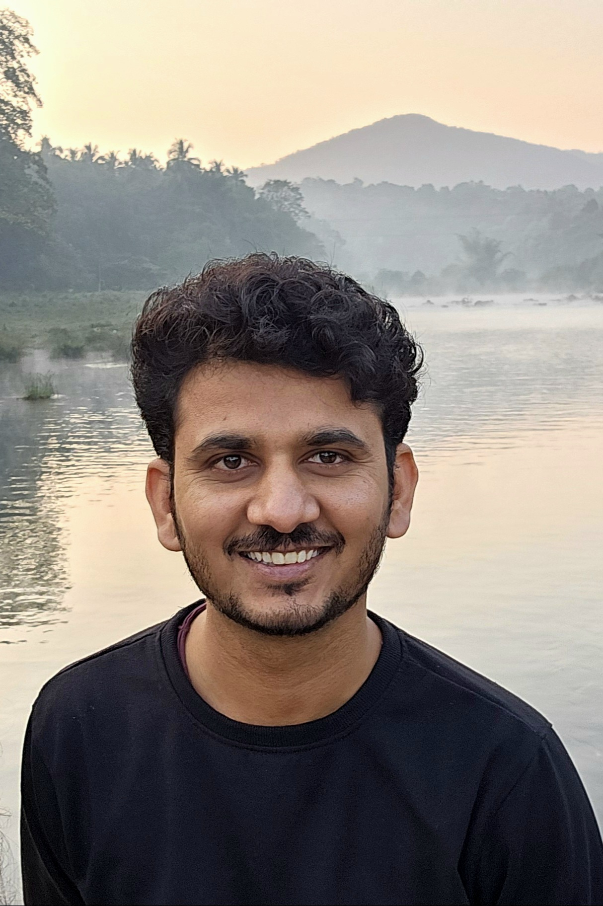
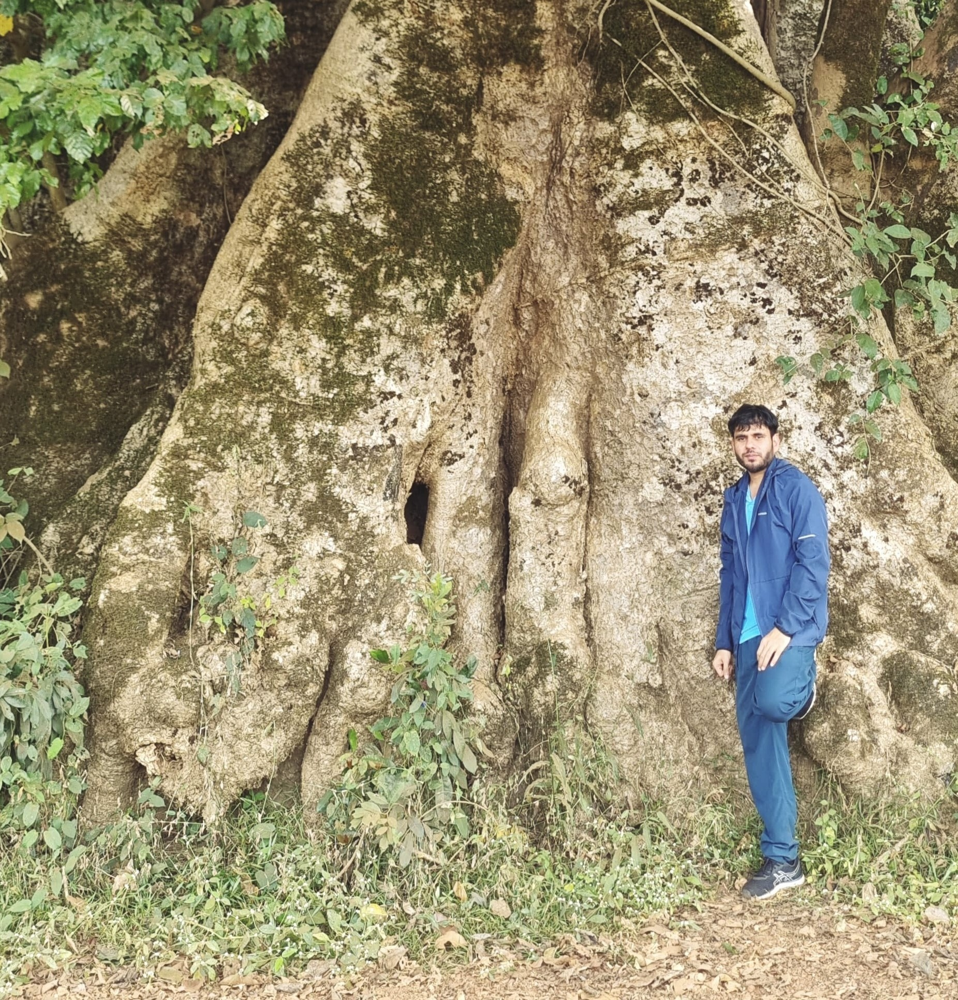

Samarpita Sahu
PhD at Centre for Climate Studies, IIT Bombay
Samarpita is currently exploring the fascinating world of plant hydraulics. Her work delves into understanding hydraulic conductance and related functional traits to uncover adaptation strategies amid climate change. A happily confused soul, believing confusion is where science begins. Outside research, she experiments with vibrant Indian fusion cooking, hums melodies to recharge, and unapologetically embraces her sweet tooth.

Tamanna Mishra
PhD at Centre for Climate Studies, IIT Bombay
Tamanna's research broadly focuses on assessing the Photosynthetic Traits of, and Variations in Strategies observed in Plants under a variety of environmental conditions. Before joining as a PhD scholar, she did her Bachelors and Masters in Geography, and a PG Diploma in Geoinformatics. Outside the lab, you can usually find her feeding stray cats, practising music or doing art.

Mohabbat Singh
PhD at Centre for Climate Studies, IIT Bombay
Mohabbat's research explores how plants might behave in tomorrow’s world, focusing on resource allocation between plant organs (allocation) and how their growth relationships shape overall plant form and function (allometry) under changing climates. He aims to improve the representation of tropical forests in vegetation models by combining experimental evidence, trait-based approaches, field observations and vegetation modeling.
He low-key aspires to turn his research and experiences into stories that connect with people someday. Ultimately, he is part researcher, part storyteller.

Sushil Jangra
PhD at Centre for Climate Studies, IIT Bombay
For Sushil, forests are a place of belonging, and stepping into one feels like entering a story still unfolding. This drew him to the quiet task of understanding these living systems so that we may better protect them and the life they shelter.
He studies forest demography in the context of environmental and climate change. His journey has taken him through NIT Kurukshetra, IISc Bengaluru, and the Nature Conservation Foundation. Beyond research, he is drawn to the outdoors, art, and sport, always walking between learning and the wild.